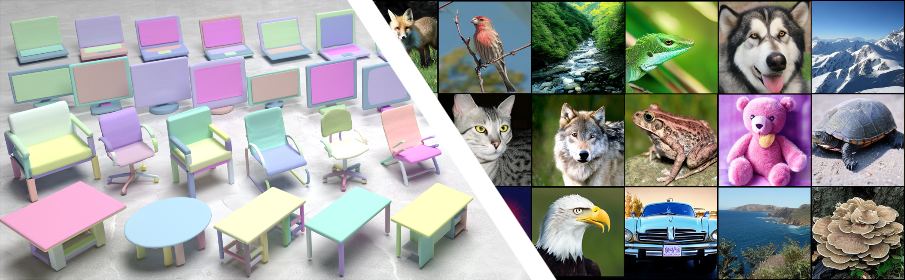
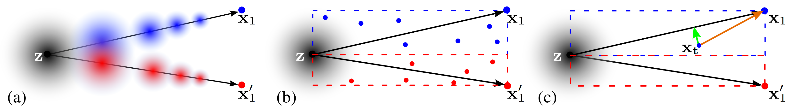
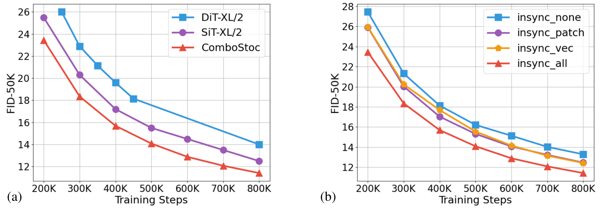
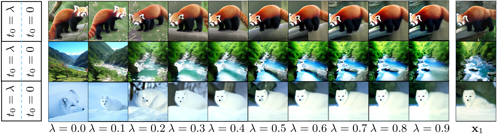
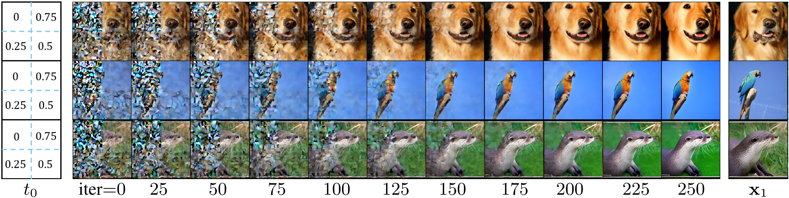

ComboStoc: Combinatorial Stochasticity for Diffusion Generative Models

Abstract

In this paper, we study an under-explored but important factor of diffusion generative models, i.e., the combinatorial complexity. Data samples are generally high-dimensional, and for various structured generation tasks, there are additional attributes which are combined to associate with data samples. We show that the space spanned by the combination of dimensions and attributes is insufficiently sampled by existing training scheme of diffusion generative models, causing degraded test time performance. We present a simple fix to this problem by constructing stochastic processes that fully exploit the combinatorial structures, hence the name ComboStoc. Using this simple strategy, we show that network training is significantly accelerated across diverse data modalities, including images and 3D structured shapes. Moreover, ComboStoc enables a new way of test time generation which uses asynchronous time steps for different dimensions and attributes, thus allowing for varying degrees of control over them.
Given base parts (left), our network can complete the missing parts conditioned on a shape category name (chair in this example). While the completed parts show great diversity, the given parts are preserved faithfully.
Introduction

ComboStoc enables better coverage of the whole path space. Assuming two-dimensional data samples. (a) the standard linear one-sided interpolant model reduces its density as it approaches individual data samples; the low density regions are not well trained and once sampled would produce low-quality predictions. (b) using ComboStoc, for each pair of source and target sample points, a whole linear subspace spanned with their connection as the diagonal will be sufficiently sampled, so that there are fewer low-density regions not well trained. (c) when the network is trained to predict velocity x1 − z, on an off-diagonal sample point xt, a compensation drift (green vector) is needed to pull the trajectory back to diagonal.

Comparison on image generation with respect to training steps. (a) plots the baseline SiT and our model, as well as DiT for reference; all models are of the scale XL/2. (b) plots the different settings using varying degrees of combinatorial stochasticity.
Results
Class-conditioned generation of structured 3D shapes. From top to bottom the classes are: chair, laptop, table and display.

Image generation using different weights of preservation. Each reference image (right) is split into two vertical halves (left), and the left half is given the preservation weights while the right region starts from scratch.

Image generation with spatially different preservation weights. As shown in the left column, the four quadrants use t0 = 0, 0.25, 0.5, 0.75, respectively. The sampling iterations converge to results that preserve the corresponding quadrants from the reference images (right) differently.
Citation
@article{xu2024combostoc,
title={ComboStoc: Combinatorial Stochasticity for Diffusion Generative Models},
author={Rui Xu and Jiepeng Wang and Hao Pan and Yang Liu and Xin Tong and Shiqing Xin and Changhe Tu and Taku Komura and Wenping Wang},
year={2024},
eprint={2405.13729},
archivePrefix={arXiv},
primaryClass={cs.LG}
}Page last updated